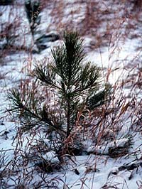
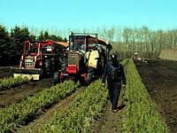

Habitat Requirements
Cycles of Abundance
Forest Harvesting
Hare and Us
Lepus americanus (also known as "Snowshoe hare")

The snowshoe hare spends most of its time resting and hiding from predators. It hides in thick cover. With the passing of autumn, its fur changes colour to match the snow. Snowshoe hares leave their warrens at night to travel and eat. Also known as bush rabbits, they are hunted by wolves, hawks, owls, lynx, coyotes, foxes, fishers, mink and people. The meat of a snowshoe hare is white and very tasty. |
A female rabbit can produce four litters of young each year. The young hares, called leverets, start to leave their nest a few days after birth. After three weeks, snowshoes are on their own. In winter, hares' large hind feet pack trails in the snow. Other clues they leave are shrub stems stripped of bark, and round brown droppings. Be a detective. Look for signs of snowshoe hare when you visit the forest this winter. |
 Snowshoe hares can hide and raise their young in a number of places. Lowland black spruce stands, dense thickets of shrubs, and fire-killed jackpine regrowth provide ideal protective cover. During the spring and summer, snowshoe hares feed on grasses, legumes, sedges and ferns. Their winter diet consists of buds, bark, and small twigs stripped from poplar, alder, willow, and other deciduous shrubs. Hares also eat the buds, needles and bark of white spruce, tamarack and jackpine seedlings. Snowshoe hares travel between hiding and feeding areas on well-defined trails. They are rarely found in open areas. |
Ideal habitat for snowshoe hares is no guarantee that they will thrive in large numbers. Snowshoe hare populations are known to build and crash in cycles of seven to ten years. No one is exactly sure why this happens. |

These population cycles affect predators that eat snowshoe hares. When the hare cycle is high, hares are easy to catch. Well-fed predators stay healthy and raise large litters of young. When the hare population suddenly drops, lynx and other hare eaters are in big trouble. After a two-year time lag, many starve. Because they are thin and weak, surviving predators give birth to fewer young. |
Forest Harvesting and the Snowshoe Hare
After mixedwood stands are harvested, lots of young deciduous shrubs will soon appear. These shrubs are eaten by hares and other herbivores. By designing cutovers so they border protective cover, foresters can produce ideal habitat. Deadfall and brush piles left along the edge of cutovers also provides cover for snowshoe hares. |

Hares often chew the bark from planted seedlings. This kills the seedling. But if protective cover for hares is reduced along the edge of jackpine and spruce plantations, fewer hares will live nearby. Fewer hares means that more seedlings will grow up to be trees. |
 Snowshoe hares are a vital link in the forest food chain. By eating plants, hares convert the sun's energy into animal protein. When hares eat bark from the stems of young trees, these saplings die. In dense regrowth of jackpine and poplar, tree thinning by hares is good. Thinning helps to produce healthy stands of timber. Their taste for planted jackpine and spruce seedlings, however, can destroy these costly plantations. |

Partners in the Saskatchewan Forest Habitat Project are setting habitat objectives for snowshoe hares. As well as protecting planted seedlings, these cutting plans will create the new growth that feeds snowshoe hares, moose and other forest herbivores. |